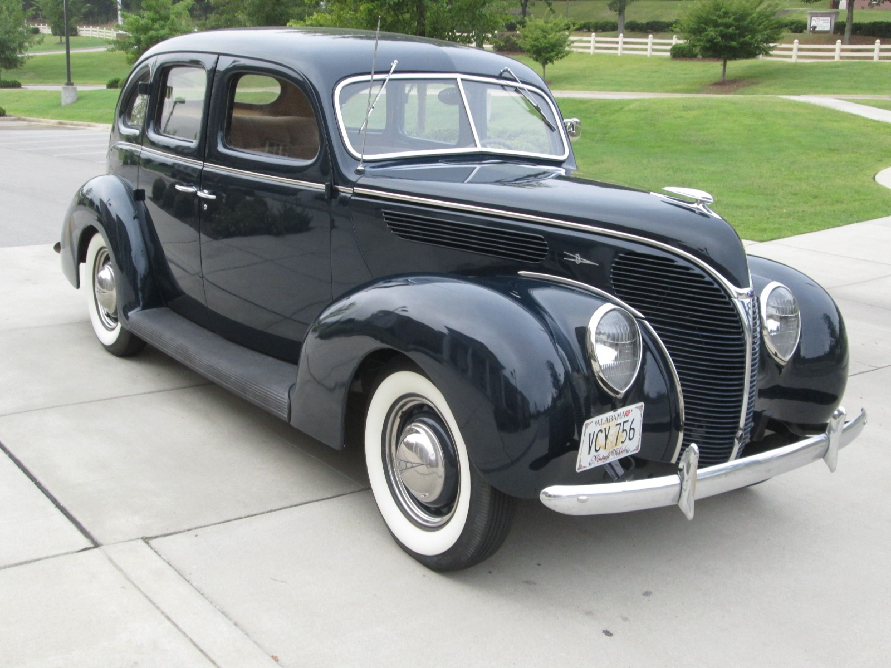

Ford 1938
O Ford de 1938 foi um modelo de carro produzido pela Ford Motor Company entre 1937 e 1938. Foi o último ano de produção do Ford com a carroceria "flatback", que tinha um formato traseiro plano.
O modelo de 1938 apresentava um design mais aerodinâmico do que os modelos anteriores da Ford, com a grade dianteira em forma de "V" e faróis integrados nas laterais da grade. Além disso, o carro tinha linhas mais suaves e curvas arredondadas que o diferenciavam dos modelos anteriores.
O Ford de 1938 estava disponível em duas versões, o modelo Standard e o modelo DeLuxe. Ambos eram equipados com um motor V8 de 3,6 litros e 85 cavalos de potência, que oferecia bom desempenho para a época. A transmissão era manual de três velocidades.
O modelo DeLuxe apresentava mais opções de acabamento e acessórios, incluindo bancos com estofamento em couro, tapetes de carpete e rádio AM. A versão DeLuxe também oferecia opções de carroceria, como o sedan de duas portas e o conversível.
Hoje em dia, o Ford de 1938 é um carro de colecionador muito valorizado, apreciado por entusiastas de automóveis antigos em todo o mundo. O design clássico, o motor V8 e a história da Ford Motor Company tornam o modelo de 1938 uma peça de colecionador altamente desejável.